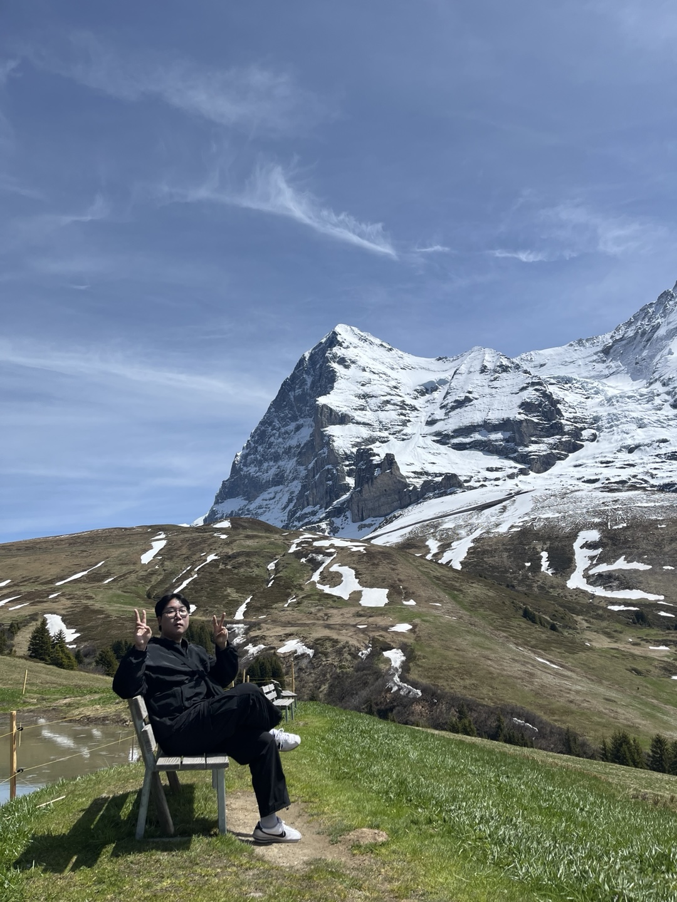
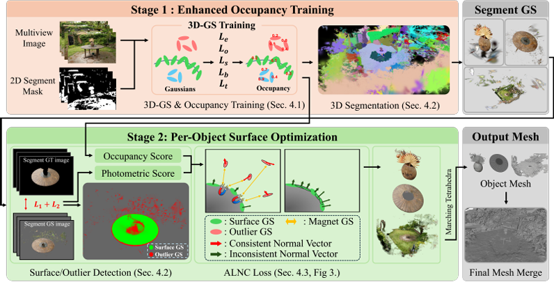
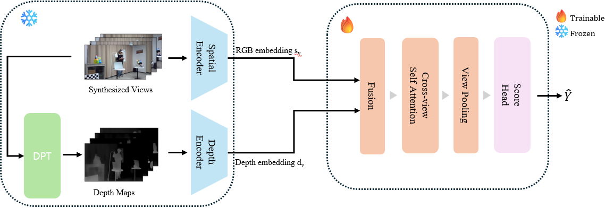
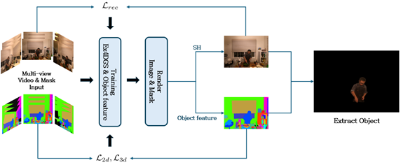

|
Uijoon Jeong I am an M.S. student in Immersive Media Engineering at Sungkyunkwan University (SKKU) and a member of the Intelligent Multimedia Computing Laboratory (IMCLab), advised by Prof. Eun-Seok Ryu. My research interests include 3D/4D scene reconstruction, semantic scene representation and understanding, and diffusion-based generative modeling. |
 |
Education
Sungkyunkwan University (SKKU)
Sep. 2024 – Present
M.S. in Immersive Media Engineering
Sungkyunkwan University (SKKU)
Mar. 2014 – Aug. 2024
B.S. in Semiconductor System Engineering
|
Publications |
International Conference |
|
|
 |
MagnetGS-Mesh: High-Quality Multi-Object Mesh Reconstruction via Adaptive Surface Optimization
Min-Su Park, Yeonho Han, Uijoon Jeong, Jun-Hyeong Park, Eun-Seok Ryu European Conference on Computer Vision (ECCV), 2026. |
Domestic Publications |
|

|
Sparse-View 3D Gaussian Splatting Optimization by Using View Consistency-Based Confidence Maps and Diffusion Models
Uijoon Jeong, Yeonho Han, Eun-Seok Ryu Journal of Broadcasting Engineering (JBE), 2026. (Accepted) |
|
 |
No-Reference Quality Assessment for Arbitrary-View Rendering with 3D Gaussian Splatting
Yeonho Han, Uijoon Jeong, Yu-Chan Cho, Eun-Seok Ryu The Korean Institute of Broadcast and Media Engineers (KIBME) Fall Conference, Nov. 2025. |
|
 |
Volumetric Video Object Extraction Based on 3D Gaussian Splatting Using 2D Segmentation Masks
Uijoon Jeong, Yeong-Gyu Kim, Eun-Seok Ryu The Korean Institute of Broadcast and Media Engineers (KIBME) Summer Conference, Jun. 2025. |
| Design adapted from Jon Barron's academic website. |